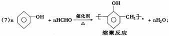
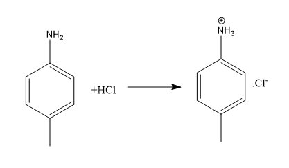
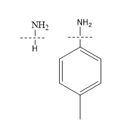
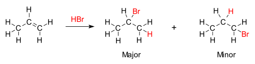
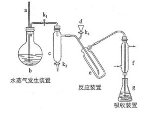
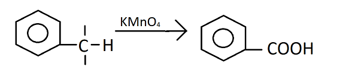
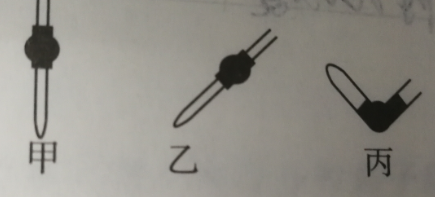
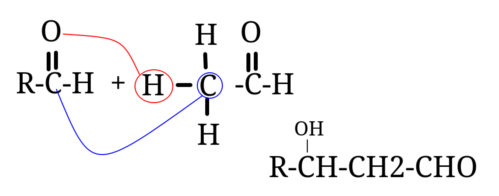
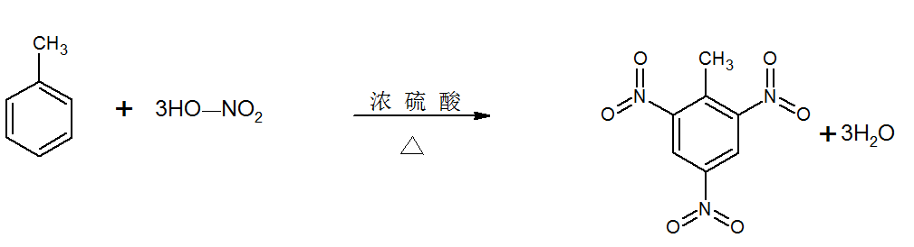

化学知识点汇总
在空气中转化为 现象？ 白色固体迅速变成灰绿色，最后变成红褐色。
颜色？ 白色。
颜色？ 红褐色。
判断：灼烧某白色粉末，透过蓝色钴玻璃观察到火焰呈紫色，说明该粉末含钾元素。 正确，焰色反应针对元素，直接灼烧粉末也可以。
高温条件下，铁与水蒸气反应产物？
颜色？ 黑色。
判断：向 和 的悬浊液中滴加 溶液，有黑色沉淀生成，说明 . 错误，考虑 使 过量。
化学与生活（选修一)
糖类通式为 ，也叫碳水化合物，但此名称不能真实反映糖类的组成和特征。
如鼠李糖 是糖却不满足通式。
甲醛 满足通式却不是糖。
葡萄糖与银氨溶液发生银镜反应，析出银。
葡萄糖和新制氢氧化铜反应产生砖红色沉淀。
选修四
直接来自自然界的能源称为一级#化学/能源#；需依靠其它能源的能量间接制取的能源称为二级能源。
#化学/燃烧热#需生成液态水。
在可逆反应中，升高温度对压强的影响？
升高温度，反应向吸热方向进行。
除此之外，升高温度，体积不变，压强变大。
多个反应同时进行时，如何提高某反应的选择性？
使用对该反应催化活性高的催化剂。
覆盖效应：化学反应中生成固体覆盖在表面阻止化学反应继续进行。
有机

苯酚与甲醛可以发生缩聚反应。
具体地，通过酚羟基邻位去氢脱水实现。
氨基可以与盐酸反应。


马氏规则：当发生亲电加成反应，例如 与烯烃的加成时，正电集团如氢，总是加在连氢最多的碳原子上。

复杂加聚产物还原时，从左往右，每个键都砍一刀。
溴代烃与 反应时：
消去反应：乙醇溶液
取代反应：水溶液
的醛基可以发生银镜反应生成 的氨气， 的水， 的银。 可以与氢氧化铜发生反应，生成 和 的水。
酚羟基可以与氢氧化钠反应。
验证还原糖时，利用新制氢氧化铜，步骤：
-
取少量待测溶液，加入稀硫酸，水浴加热，冷却。
-
还原糖与 悬浊液发生氧化反应，必须在碱性条件下。
-
加碱中和残余稀硫酸。
-
取少量溶液于洁净试管中，加入新制的 溶液，加热，观察现象。
-
如果出现砖红色沉淀，则说明为还原糖。
无机
实验室制备氨气不能使用氯化铵加热分解，因为在试管口，氯气和氯化氢气体化合再次生成氯化铵，制备原理不合适。
事实上，实验室制备氨气主要是用氯化铵和熟石灰混合加热的方法，在收集的试管口加棉花。
固体只有石墨和金属单质可以导电。
NaHSO4完全电离
H3O+=H+ +H2O
弱酸排序：
亚硫磷酸氢氟酸，
亚硝甲酸冰醋酸，
碳酸氢硫氰氢酸。
陶瓷的原料主要是黏土。
植物油主要是不饱和高级脂肪酸的甘油酯。
动物油主要是饱和高级脂肪酸的甘油酯。
“墨滴无声入水惊，如烟袅袅幻形生”中的“墨滴”是碳分散于水中形成的胶体。
氧化铜的颜色：黑色。
乙醇能与酸性高锰酸钾发生氧化还原反应，使酸性高锰酸钾溶液褪色。
化学变化一定有旧键断裂和新键生成，如果没有生成新键，不算化学变化。
电离只有旧键断裂，没有新键生成，是物理变化。
过氧化钠纯品为白色，但一般见到的过氧化钠混有超氧化钠，呈淡黄色。

其中 a 的作用是：平衡气压，避免 b 中压强过大。
能与 溶液发生显色反应，说明有机物中有什么基团？酚羟基。
能发生银镜反应，说明有机物中有什么基团？醛基。
同时满足酯基和醛基的特殊基团：
与 在常温下发生可逆反应互相转化，判断物质的量使容易设错。
橡胶中加入炭黑做成轮胎，可增强耐磨性。
工业上用甲烷制取炭黑。
水分子间有氢键，增大分子间作用力，影响熔沸点。
碘的四氯化碳溶液为紫色。
实验题中，生成物有可燃性气体，注意爆炸风险。
可用于火箭推进器。
蒸馏分离时，注意杂质液体不一定是水。
氧化还原时，一般考虑转化到相邻价态。
硫化物溶解度：
焰色反应： 颜色为黄色，检验 需要使用蓝色钴玻璃。
检验 ：通入 溶液中，产生白色沉淀，加入稀盐酸，白色沉淀溶解，产生无色无味气体。
检验 ：通入 溶液中，产生白色沉淀，加入稀盐酸，白色沉淀不溶解。
检验 ：加入 ，淀粉溶液变蓝。
检验 ：与 微热，产生能使试管口湿润的红色石蕊试纸变蓝的气体。
有 2 种同分异构体， 有 4 种， 有 8 种。
苯环上同分异构体，AB 有 3 种，ABC 有 10 种，AAB 有 6 种，AAA 有 3 种。

苯基使甲基、乙基等容易被氧化。谁反应，谁被影响。
甲基使邻位、对位的氢原子活化，容易被取代。
可用浓 与 制取
与 高温下燃烧生成
工业制玻璃：石灰石、纯碱和二氧化硅反应生成硅酸盐。
与 反应只生成
金属元素在化合物中一定显正价。
在自然界中只有化合态。
为白色固体。
钠在空气中，生成 ，转化为 ，转化为
焰色反应步骤：洗烧蘸烧洗。
-
洗：将铂丝用盐酸洗净。
-
烧：在外焰上烧至与原本颜色不相同的颜色。
-
蘸：蘸取待测溶液。
-
烧：再烧。
-
洗：用稀盐酸洗至无色。
硅元素在自然界中全部以化合态存在，主要为氧化物与硅酸盐。
有结晶与无定形两类。
晶体为 与 按照 $1:2$ 比例组成的立体网状结构。
硅酸为不溶于水的白色固体。
硅酸酸性比碳酸弱。
硅胶(或硅酸干凝胶)用作干燥剂、催化剂载体。
硅酸盐大多不溶于水。
是酸性氧化物，却溶于 ，因为 $4HF + SiO_2 = SiF_4 \uparrow + 2H_2O$
碳可以还原二氧化硅：$2C + SiO_2 = Si + 2CO\uparrow$
硅单质用于制作半导体。
二氧化硅：石英玻璃、玛瑙、水晶、光导纤维。
要保存在硅胶塞瓶中，否则会与玻璃反应粘住瓶口。
可与强碱生成
常见的可溶硅酸盐：，水溶液为水玻璃。
侯氏制碱法反应总方程式：
$2NaHCO_3 = Na_2CO_3 + CO_2 \uparrow + H_2O$
乙醇与水形成氢键，提高水溶性。
是弱电解质，有酸式电离和碱式电离两种电离方法。
乙醇是非电解质。
是非电解质。
电解质不一定能导电，而要溶于水或熔融状态下才能导电。
与 与 都是强电解质。
第一步能完全电离的电解质就是强电解质。
-
化合物
-
电解质
-
强电解质
-
离子化合物
-
大多数盐
-
活泼金属化合物
-
强碱
-
-
共价化合物：强酸
-
-
弱电解质，共价化合物：
-
弱酸
-
弱碱
-
水
-
少数盐
-
-
-
非电解质
-
离子化合物一定是强电解质吗？
离子化合物一定是强电解质。
共价化合物一定不是强电解质吗？
错误，强酸是共价化合物，是强电解质。
甲基橙：pH < 3.1 时红色，3.1 ~ 4.4 时橙色，> 4.4 时黄色。
石蕊 pH < 5 时红色，5 ~ 8 时紫色，> 8 时蓝色。
酚酞 pH < 8.2 时无色， > 10 时红色。
-
意外事故处理
-
少数浓硫酸溅到皮肤上：立即大量水冲洗，涂上 3% ~ 5% 的 溶液
-
酒精灯有机物着火：湿抹布或沙子盖灭，不能用水。
-
浓氢氧化钠溶液溅到皮肤上：立即大量水冲洗，涂上稀的硼酸溶液。
-
误食重金属盐：服用大量牛奶或蛋清，及时送往医院。
-
水银洒出：撒上硫粉并进行处理。
-
少数酸碱溅到眼睛里：立即大量水冲洗，边洗边眨眼睛。
-
-
取用固体药品仪器：
-
粉末：药匙或纸槽
-
块状：镊子
-
一定量：用托盘天平称量
-
-
取用液体药品：
-
少量：胶头滴管
-
多量：试剂瓶倾倒
-
一定量：量筒量取
-
-
试剂瓶选择：
-
瓶口：
-
广口瓶：固体
-
细口瓶：液体
-
-
塞子：
-
橡胶塞：碱性溶液
-
玻璃塞：酸性、中性溶液
-
-
颜色：
-
无色：无需避光保存的试剂
-
棕色：需要避光保存的试剂
-
-
-
物质加热：
-
热源：酒精灯、酒精喷灯
-
仪器：
-
直接加热：试管、坩埚、蒸发皿
-
间接加热：烧杯、锥形瓶
-
-
-
实验安全操作六防
-
防爆炸
-
点燃可燃性气体：点燃前验纯；防止火焰进入装置，加装防回火装置
-
用 、 还原 等：先排净装置内空气，再加热。实验结束先撤酒精灯，再停止通气。
-
-
防暴沸
-
加热液体：在液体中加入碎瓷片或沸石
-
浓硫酸的稀释：引酸入水，不断搅拌。
-
-
防中毒
-
制取有毒气体：加装尾气吸收装置、在通风橱中制备
-
误食重金属盐：服用大量牛奶或蛋清、及时就医
-
-
防污染：加装吸收装置，有毒物质处理后再排放
-
防倒吸：实验完毕后，先撤出导管，再熄灭酒精灯。
温度计测定液体温度时不能与容器内壁接触。
热的玻璃容器不能放在桌面上，以防破裂。
-
过滤的操作要领
-
一贴：滤纸紧贴漏斗内壁
-
二低：滤纸边缘低于漏斗边缘、液面低于滤纸边缘
-
三靠：倾倒溶液的烧杯尖口紧靠玻璃棒、玻璃棒轻靠三层滤纸处、漏斗下端尖口紧靠烧杯内壁
-
加热蒸发操作要领：
-
蒸发皿中液体不超过容积的 ，防止溅出。
-
用玻璃棒不断搅拌，防止局部受热造成液滴飞溅。
-
出现较多固体或液体较少时，停止加热，用余热蒸干，防止晶体过热迸溅。
沉淀的洗涤方法：向过滤器中加入蒸馏水至浸没沉淀，待水自然流下后，重复操作 2 ~ 3 次，直至沉淀洗涤干净。
-
粗盐提纯除去难溶性杂质步骤
-
溶解：粗盐逐渐溶解，食盐水呈浑浊
-
过滤：液体滤过滤纸，滤纸上有不溶物，滤液较澄清
-
蒸发：水分不断蒸发，逐渐有晶体析出
粗盐提纯中使用的除杂试剂： 溶液、 溶液、 溶液。
加入顺序： 在 后加入即可。
分离和提纯的区别：分离是将各组分分离开，提纯是只需要被提纯物质，而除去其他杂质。
-
物质提纯的“三个必须”和“四个过量”原则
-
三个必须：
-
除杂试剂必须稍过量
-
过量试剂必须除尽，且容易除去
-
除杂途径选最佳，有多种杂质时除杂顺序必须合理
-
-
四个原则
-
不增：不增加新的杂质
-
不减：不减少被提纯的物质
-
易分离
-
易复原
-
-
离子检验的一般步骤
-
取样：
-
每次取少量待测物进行检验，不能在原试剂瓶中检验
-
若待测物为固体，有时需要配制为溶液再检验
-
-
加入试剂
-
观察现象
-
得出结论
检验碳酸根方法：向待测液体中加入 溶液，有白色沉淀生成，沉淀溶于稀盐酸或稀硝酸，生成无色无味且能使澄清石灰水变浑浊的气体。
检验硫酸根方法：向待测液体中加入稀盐酸，无明显现象，然后加入几滴 溶液，有白色沉淀生成。
加热圆底烧瓶或蒸馏烧瓶时，需要石棉网。
蒸馏时温度计水银球的位置：与蒸馏烧瓶支管口处相平，测定馏分的温度。
蒸馏时，先通冷却水，再加热圆底烧瓶或蒸馏烧瓶。
萃取剂选择的标准：与另一种溶剂互不相溶，与被萃取的物质不发生反应，溶质在萃取剂中溶解度远大于在原溶液中的溶解度。
-
用四氯化碳萃取碘水中的碘
-
查漏：分液漏斗使用前必须查漏。
-
装液：量取碘的饱和水溶液，倒入分液漏斗中，加入四氯化碳，盖好玻璃塞。现象：液体分层，有色层在上层。
-
震荡：用右手压住分液漏斗口部，左手握住活塞部分，把分液漏斗倒转过来震荡，使两种液体充分混合。
-
静置：将分液漏斗放在铁架台上，静置。现象：液体分层，上层无色，下层紫红色。
-
分液：将分液漏斗颈上的玻璃塞打开，拧开分液漏斗下面的活塞，放出下层液体，从上口倒出上层液体。
天然纤维分为棉纤维和蛋白质类纤维。
丝绸是天然纤维中的蛋白质类纤维，主要成分是蛋白质。
人造丝的主要成分是人造纤维。
棉花的主要成分是纤维素。
皮革的主要成分是蛋白质。
判断：人造丝、棉花、皮革、丝绸和皮肤的主要成分都含蛋白质。
错误。
人造丝的主要成分是人造纤维。
棉花的主要成分是纤维素（糖类）。
皮革的主要成分含有蛋白质。
丝绸的主要成分是蛋白质。
皮肤的主要成分含有蛋白质。
二氧化硫不能使指示剂褪色。
判断：碳酸钠溶液具有碱性，可以用于除去乙酸乙酯中的乙酸。
正确。
判断：氧化铝的熔点高，可用于制耐火砖和坩埚。
正确。
判断：生成、纯化和检验乙烯的实验中，需要用到澄清石灰水。
错误，不需要检验二氧化碳。
实验室制备二氧化硫的方法？
亚硫酸钠固体和浓硫酸混合制备二氧化硫。
实验室制备二氧化硫需要加热吗？
不需要，亚硫酸钠固体和浓硫酸混合制备二氧化硫不需要加热。
实验室制备氨气方法？
浓氨水和氧化钙混合。或氯化铵和熟石灰混合加热。
判断：氮氧化物可能会严重破坏臭氧层。
正确。
常温和标况下是什么状态？
都是气态。
常温和标况下是什么状态？
都是液态。
氯仿的化学式是什么？
电解质溶液越稀越电离。
电离平衡右移，弱电解质的电离度不一定增大。例如加入大量电解质分子，平衡右移，但越浓越不电离，电离度减小。
相同 pH 值的酸稀释后，越弱的酸变化越小。
酸性氧化物不一定是非金属氧化物，如 .
金属氧化物不一定是碱性氧化物，如 .
有些胶体粒子带有电荷，但胶体不带电。
冰水混合物是纯净物。
广泛 pH 试纸精确到多少？
1,即只读整数。
pH 试纸需要估读吗？
不能估读。
煮沸溶液的常见作用？
除去溶解氧，除去易分解、挥发的溶质。
非金属氧化物都是酸性氧化物吗？
否，例如 .
碱性氧化物都是金属氧化物吗？
正确。
判断： 能使品红溶液褪色。
正确。
加入酚酞溶液现象？
先变红，后褪色。
反应生成 时，转移多少电子？
判断： 的 溶液中 的数目为 . 错误， 在水中会水解，考虑电离可逆。
能氧化亚硫酸根吗？
可以。
与 反应机理？
硅胶可以用作干燥剂吗？
可以。
硅胶有很强的吸水性吗？
正确。
硅胶的主要成分是？
二氧化硅。
除去氯气中的氯化氢可以通入什么？
饱和食盐水溶液。利用氯化氢的水溶性，且氯气溶于水可逆，氯离子浓度大不溶。
碳和浓硫酸反应方程式？
判断：燃烧一定需要氧气。
错误，例如钠在氯气中燃烧。
滴定管精确读数为 0.01 ml.
判断：HF 是酸，酸式滴定管可以盛放。
错误，与二氧化硅反应。
滴定管使用方法：
查漏：检查滴定管活塞是否漏水。
润洗：加入反应液前，滴定管用所盛装溶液润洗 2~3 遍。
装液：液面位于滴定管 0 刻度线上 2-3 mL 处。
调液面记数据：调节活塞，使滴定管尖嘴部分充满溶液，调节滴定管液面使其处于某一刻度，准确读取数值并记录。
酸碱滴定实验操作：
洗（洗涤）：洗涤仪器并检漏、润洗。
取（取液）：向滴定管中加入对应液体，锥形瓶中加入对应液体，加入指示剂。
滴（滴定）：锥形瓶下垫白纸，左手控制活塞，注视锥形瓶中溶液颜色变化，先快后慢地加入溶液。
读（读数）：指示剂发生明显颜色变化，且半分钟内颜色不再变化，停止滴定。平时滴定管中凹液面最低处读数。
记（记录）
算（计算）
滴定终点：指示剂发生明显颜色变化且半分钟内颜色不再改变。
滴定中指示剂选择原则：滴定中和产物的溶液的 pH，例如强碱弱酸最终产物显碱性，选择酚酞。
滴定中，如果不用待装液体润洗滴定管，影响？
滴定管中溶液被稀释。
判断：滴定中，应用待装液体润洗锥形瓶。
错误，不应润洗锥形瓶，防止增加待装液体溶质量。
滴定中，锥形瓶中加入过量蒸馏水影响？
无影响。锥形瓶中只需保证物质的量一定。
滴定管零刻度线在哪里？
从上到下，有一定距离。
判断：滴定管量程为 0-50mL，示数为 40mL 时，滴定管内溶液体积为 10mL.
错误，滴定管最大示数不在底部。
为什么滴定管分酸碱式？
碱性物质与二氧化硅反应。
高锰酸钾应放在哪种滴定管中？
酸式滴定管。高锰酸钾会腐蚀橡胶。
排出碱式滴定管中气泡的方法应采用：

应采用丙。
实验室制氨气，使用氯化铵和熟石灰混合，需要加热吗？
需要。
实验室制氨气，可以用硝酸铵和熟石灰混合加热吗？
不能，硝酸铵容易爆炸。
实验室制氨气，采用氯化铵和熟石灰混合加热，为什么要加棉花？
防止 与空气对流，确保收集纯净；减少 对空气的污染。
实验室制氨气，氯化铵和熟石灰混合加热，棉花加在哪里？
收集试管管口。
实验室制氨气，氯化铵和熟石灰混合加热，可以换成 或 吗？
不能，强碱易潮解结块，不易与铵盐充分混合反应。
且 与 有强腐蚀性，加热下对玻璃仪器有腐蚀作用。
实验室制取氨气，除去水蒸气用什么？
碱石灰。
实验室制取氨气，可以用 除去水蒸气吗？
不行，氨气会与 反应。
钠与水反应实验现象：
-
浮：钠的密度比水小。
-
熔：反应放热，钠的熔点低。
-
游：反应放出气体，推动钠球游动。
-
响：反应剧烈，发出“丝丝”响声。
-
红：生成强碱，加入酚酞的溶液变红。
钠的硬度怎么样？
较小，能用刀切割。
钠的密度与水相比？
比水小。
钠的颜色状态？
银白色固体。
钠加入有酸和水的溶液中，如何反应？
先酸后水。
钠制取钾的方程式？
钠能制取金属钾的原因：钾的沸点比钠低，使钾成为蒸汽逸出。
判断：用钠制取钾时，钠能置换出钾，说明钠的还原性比钾强。
错误。
钠能制取金属钾的原因：钾的沸点比钠低，使钾成为蒸汽逸出。
工业制备钠方程式？
钠的熔点如何？
较低，约为 97 度。
钠如何保存？
保存在煤油中。
钠为什么保存在煤油中？
钠容易与空气中水、氧气反应，密度比煤油大。
氧化钠 阴阳离子个数比？
1:2
过氧化钠 阴阳离子个数比？
1:2
过氧化钠是碱性氧化物吗？
不是。对应的反应生成氧气，违背定义。
火碱指的是？
氢氧化钠。
烧碱指的是？
氢氧化钠。
苛性钠指的是？
氢氧化钠。
判断：称量氢氧化钠时，需要垫滤纸。
错误，需要装在烧杯中，否则受潮粘住滤纸。
氢氧化钠溶于水放热还是吸热？
大量放热。
氢氧化钠固体颜色？
白色。
氢氧化钠可以与苯酚反应吗？
可以。
氢氧化钠与苯酚反应现象？
白色浊液变澄清。
制备熔融 时可以用瓷坩埚吗？
不能，与二氧化硅反应。
纯碱指的是？
碳酸钠。
苏打指的是？
碳酸钠。
小苏打指的是？
碳酸氢钠。
碳酸钠和碳酸氢钠溶解度比较？
碳酸钠更大。
加入盐酸时，产生二氧化碳速率，碳酸钠和碳酸氢钠比较？
碳酸氢钠更大。
判断： 错误，碳酸氢根与钙离子不反应。
转化为 方法？
加少量酸、加二氧化碳。
转化为 方法？
加热或加碱。
碳酸钠用途？
除油污、造玻璃、造纸。
碳酸氢钠用途？
治疗胃酸过多，用于灭火器。
判断：可以不用其他试剂鉴别盐酸和碳酸钠溶液。
正确，互相滴加，盐酸中加入碳酸钠溶液立即产生气体，碳酸钠溶液加入盐酸开始时不产生气体。
工业制备氢氧化钠方法？
电解饱和食盐水。
工业制备氢氧化钠阳极、阴极和总方程式？ 阳极： 阴极： 总反应：
侯氏制碱法分为哪两步？
向饱和食盐水中通入 至饱和，再通入 利用 溶解度小的性质析出。
再令 受热分解。
工业制备纯碱方法？
侯氏制碱法。
侯氏制碱法的目标产物是？
纯碱。
侯氏制碱法的核心步骤？
向饱和食盐水中先通入 ，饱和后再通入 ，利用 溶解度小的性质析出
侯氏制碱法第一步方程式？
钠在空气中变化过程：
-
变暗：生成氧化钠
-
成液：氧化钠和水生成氢氧化钠
-
结块：氢氧化钠和二氧化碳、水生成碳酸钠合水晶体
-
变成粉末：碳酸钠合水晶体干燥，最终变成 粉末。
钠可以置换出熔融状态下较不活泼的金属吗？
可以。
判断：高压钠灯可用于道路照明。
正确。
判断：爆炸中的火药含有硫磺。
正确。
判断：蔗糖属于多糖。
错误，属于二糖。
判断：“雷雨发庄稼”的过程有硝酸生成。
正确。
$2NO + O_2 = 2NO_2$
判断：可以用臭氧进行自来水消毒。
正确。
用臭氧消毒，氧化性强，杀菌消毒程度高，无污染。
判断：可以用硫酸铁除去水中的悬浮物。
正确。
电离出的铁粒子发生水解反应，生成带电胶体除去悬浮物。
判断：可以用 除去硬水中的 和
错误。
硫酸镁微溶于水，硫酸钙微溶于水，不能除去。
判断：可以用 除去工业废水中的 和
正确。
生成 与
判断：向某无色溶液中依次加入适量的氯水和四氯化碳，震荡观察，若溶液分层且下层为紫色，则该溶液中含有 .
正确。
铜与稀硫酸共热反应吗？
不反应。
提纯晶体的方法？
重结晶法。
判断：节日焰火的五彩缤纷是某些金属元素化学性质的展现。
错误，五彩缤纷与化学性质无关。
判断：氟氯代烷是性能良好的制冷剂，应推广使用。
错误，造成臭氧层空洞。
判断：用浸泡过高锰酸钾溶液的硅藻土保鲜水果。
正确，可吸收乙烯。
判断：向煤中加入石灰石作为脱硫剂，可以减少 的排放，最终形成 . 错误，
结构式中能写 这种简写氢原子的方式吗？
不能。
判断： 转化为 是物理变化。
错误，是化学变化。
具有强氧化性吗？
具有。
在酸性还是碱性中？
碱性。
离子共存判断：
不共存， 被次氯酸氧化为
乙醇和浓硫酸共热制乙烯，温度计位置？
插入反应液中。
可以在容量瓶内直接配制溶液吗？
不行。
苯萃取溴水，上下层分别为？
上层为有机层，下层为水层。
苯的密度和水比？
比水小。
判断：在空气中用蒸发皿高温灼烧 制取
错误，灼烧物质在坩埚中。
标况下，乙醇的物态？
液态。
金刚石中 键个数？ .
判断： 中，各原子都达到 8 电子稳定结构。
错误， 不是。
判断：用 pH 试纸测量同浓度的盐酸与次氯酸的 pH 值，盐酸的 pH 值更小，盐酸酸性强于次氯酸。
错误，次氯酸漂白 pH 试纸。
判断：向氢氧化铁胶体中滴加少量稀硫酸溶液，有红褐色沉淀产生，氢氧化铁胶体发生了聚沉。
正确。
可以还原 吗？
可以。
的焰色？
淡紫色。
能作为 捕获剂吗？
可以，生成碳酸氢钠。
判断：在纯水中加入能水解的盐一定促进水的电离。
正确。 #存疑# #TODO#
为抑制 溶液水解，应该在溶液中加入什么？
少量盐酸。
水解反应放热还是吸热？
吸热。
判断：在 或 溶液中加入镁条会产生气泡，与水解有关。
正确，水解生成氢离子。
草木灰和铵态氮肥可以混用吗？
不能。碳酸根与氢离子反应。
中混有 杂质，加入什么除杂试剂？
或 ，原理为 水解出的氢离子和其反应，水解不断右移使 完全沉淀。
判断：燃煤中加入 可以减少酸雨的形成和温室气体的排放。
错误，不能减少温室气体的排放。
工业上制取单质钠的方法？
电解熔融氯化钠。
氨基酸能否与酸/碱反应？
能。
肽键在酸碱环境下水解的过程能否消耗酸或碱？
能。虽然肽键水解过程本身不消耗酸碱，但是水解产生的氨基酸能够与酸/碱反应。
铬酸钾与重铬酸钾互相转化的离子方程式？
其中铬酸根 为黄色，重铬酸根 为橙红色。
硫酸亚铁在空气中蒸干灼烧的生成物是什么？
硫酸铁和氧化铁。
硫酸亚铁氧化生成氢氧化铁，灼烧为氧化铁。
判断：工业制硫酸和制硝酸涉及的反应都是氧化还原反应。
错误，如 溶于水生成硝酸。
制备溴苯时，使用溴水还是液溴？
液溴。
固氮指的是什么？
将空气中游离态氮转化为化合态氮的过程。
铁表面的油污可以用什么处理？
热的纯碱溶液 ()。
过滤需要的玻璃仪器有哪些？
烧杯、漏斗和玻璃棒。
苯的硝化反应的条件？ 浓硝酸、浓硫酸， 加热。
溶于酸吗？ 溶。
是沉淀吗？ 是。
如何在含有 的溶液中检测 ? 加入稀盐酸，再加入 ，因为 溶于酸。
羟醛缩合：  随后可以脱去一分子水，形成双键。
同 pH 的强酸 与 与足量 反应，产生的 哪个多？ 不确定，未指定体积。
与 一起通入澄清石灰水，会产生浑浊吗？ 需要按量计算。 时，产生浑浊。 否则不产生浑浊。 原理：
判断：向氨水中加入同浓度醋酸，溶液导电性不断上升。 错误，先上升，后减小。
判断：分别测定饱和 与 的水溶液 pH 值，可以比较亚硫酸与碳酸的电离度。 错误，浓度不同，没有可比性。 且 溶液并非全是 ，还会发生 的动态平衡， 同理。
判断：中学阶段，氨水是唯一易溶弱碱。 正确。
三大强碱？ 、、
显酸性、碱性还是中性？ 中性。
判断： 电离大于水解。 正确。
判断： 电离大于水解。 正确。
易水解盐，如 ，如何获得固体？ 冷却结晶，低温加热， 气体环境。
如何通过 制取 ？ 干燥 气流中加热脱水。 氯化氢气体作用：快速带走水蒸气、抑制 水解。
判断：电解质导电的过程就是电解质电解的过程。 正确。
卤代烃消去反应的条件？ 强碱的醇溶液、加热。
环烷烃开环反应？
炔烃与卤素加成条件？ 无条件。
炔烃与卤代烃加成条件？ 催化剂加热。
甲苯与浓硝酸取代反应方程式？ 
判断：甲苯可以发生苯环上的反应。 正确。
苯的同系物发生卤代反应时，催化剂为？ 铁粉（卤化铁） 光照条件下，在烷基上发生取代反应。
甲苯能使酸性高锰酸钾溶液褪色吗？ 可以，烷基氧化为羧基。
烯烃、炔烃加成的马氏规则？ 氢多加氢。 氢原子常加到双键碳上含氢原子较多的一端。
烯烃、炔烃加成的反马氏规则？ 过氧化物作催化剂时，结果与马氏规则相反。
有 的烯烃（或甲苯、芳香烃），因碳碳双键、苯环的影响，使 变得较为活泼，因而容易发生？ 取代反应。例如：
苯环上的定位效应： 为斥电子基，新引入的取代基一般在哪里？ 原有取代基的邻位或对位。
苯环上的定位效应： 为斥电子基，新引入的取代基一般在哪里？ 原有取代基的邻位或对位。
苯环上的定位效应： (R 为烷烃基)为斥电子基，新引入的取代基一般在哪里？ 原有取代基的邻位或对位。
苯环上的定位效应： (烷烃基)为斥电子基，新引入的取代基一般在哪里？ 原有取代基的邻位或对位。
苯环上的定位效应： 为斥电子基，新引入的取代基一般在哪里？ 原有取代基的邻位或对位。
苯环上的定位效应： 为斥电子基，新引入的取代基一般在哪里？ 原有取代基的邻位或对位。
苯环上的定位效应： 为斥电子基，新引入的取代基一般在哪里？ 原有取代基的邻位或对位。
苯环上的定位效应： 为吸电子基，新引入的取代基一般在哪里？ 原有取代基的间位。
苯环上的定位效应： 为吸电子基，新引入的取代基一般在哪里？ 原有取代基的间位。
苯环上的定位效应： 为吸电子基，新引入的取代基一般在哪里？ 原有取代基的间位。
苯环上的定位效应： 为吸电子基，新引入的取代基一般在哪里？ 原有取代基的间位。
苯环上的定位效应： 为吸电子基，新引入的取代基一般在哪里？ 原有取代基的间位。
卤代烃与同碳原子数的烷烃沸点比较？ 卤代烃沸点高。
卤代烃水解反应条件？ 水溶液、加热。
卤代烃消去反应条件？ 醇溶液、加热。
卤代烃的检验？ 水溶液加热，取代出 加过量稀硝酸中和 ，然后加入 溶液 若白沉则 若淡黄色沉淀则 若黄色沉淀则
卤代烃检验，加入稀硝酸酸化目的？ 中和过量 ，防止 与 反应生成暗褐色的 沉淀。
其他
给原电池充电时，怎么接？ 正极接正极，负极接负极。
完全沉淀标准？
波尔多液原料？
化学中代数式需要化简吗？ 不需要。
实验室制备方法？ 浓硫酸。
判断：铁在电极反应中一般只生成 正确。
在原电池中，正极板被保护，这被称为牺牲阳极的阴极保护法。
在电解池中，阴极被保护，这被称为外加电流的阴极保护法。
在电化学中，阳极、阴极指的是？ 阳极：升失氧化还原剂。被氧化的是阳极。 阴极：降得还原氧化剂。被还原的是阴极。
判断：有的酸没有酸酐。 正确。 酸酐一般可看作酸脱去水得到的氧化物，只有含氧酸才有酸酐。
久置氯水可以看作什么？ 稀盐酸。
化合价？ ， 考虑非金属性。
判断：纯硫酸不导电的原因是没有自由移动的离子。 正确。
万能还原剂是？
氧化性比较？ 递减。
与 反应？ 无条件发生。
与 在酸性条件下反应的机理？
常见氧化性排序？
与浓硫酸常温下是否反应？ 不反应。
判断：温度会影响氧化性、还原性。 正确。
与 高温下反应方程式？
产生 的现象描述？ 有无色气体产生，上升过程中转变为红棕色。
判断： 与浓硝酸、稀硝酸反应，可以证明 的氧化性强于 正确。
原电池、电解池方程式书写最容易出的设错点是？ 溶液酸碱性。
电解池阴阳离子移动？ 阳阴阴阳。阳离子移向阴极，阴离子移向阳极。
原电池阴阳离子移动？ 阳正阴负。
是电解质吗？ 是。
溶液导电性与电荷浓度成正比。
判断：强电解质导电性大于弱电解质。 错误，需要同浓度、同温度下。
六大强酸？
判断： 在水中完全电离。 正确。
是强碱还是弱碱？ 弱碱。
难电离可溶盐例子？
电离方程式？
判断：电解质一定能导电。 错误，例如固态
判断：是两性氢氧化物。 正确。
与 能大量共存吗？ 不能，形成络合物。
与 能大量共存吗？ 不能，形成无色络合物。
判断：与可以形成紫色络合物。 正确。
判断：可以发生。 错误。
颜色？ 蓝色。
颜色？ 浅绿色。
颜色？ 黄色。
颜色？ 紫色。
在什么环境下存在？ 碱性。
在什么环境下存在？ 酸性。
判断： 溶于 错误。
检验 ？ 与 固体或浓 溶液共热，产生使湿润红色石蕊试纸变蓝的气体。
生成 现象？ 先产生白色沉淀，迅速变为灰绿色，最终变为红褐色。
判断：可用 代替铂丝进行焰色反应。 正确，二者都没有焰色。
判断：焰色反应中，可用 代替稀盐酸洗涤。 错误，产生 盐不挥发，影响反应。
判断：焰色反应中，可用 代替稀盐酸洗涤。 正确。
检验？ 加入足量 溶液中，白沉，过滤取滤液，加入足量稀盐酸，产生无色无味能使澄清石灰水变浑浊的气体。
检验？ 加入足量 溶液中，无白沉，加入适量 溶液，产生白沉。
判断： 难溶。 正确。
判断： 微溶。 正确。
可溶碳酸盐？
判断： 盐可溶。 正确。
判断： 可溶。 正确。
判断： 可溶。 错误，难溶。
判断：卤化物只有 难溶，其他均可溶。 正确。
水垢成分？ ，少许
不共存原因？ 发生复分解反应，生成 说明 酸性强于
判断： 与 在酸性条件下不可共存，碱性条件下可大量共存。 正确。
何时考虑完全双水解？ 一沉一气。 一般不考虑与酸根双水解。（两气）
判断：透明溶液不一定无色。 正确。
使甲基橙变黄的溶液的酸碱性？ 酸碱都有可能。
判断：不加热大量共存，加热沉淀。 正确。
通入少量 产物？
通入少量 产物？
下移水准管，量气筒液面如何变化？ 下降。
能与冷水反应吗？ 可以，现象不明显。
能与冷水反应吗？ 不能。
加热分解吗？ 分解。
判断：越活泼的金属氢氧化物越不容易加热脱水。 正确。
转化为 方程式？
转化为 方法？ 加碱，微溶转难溶。
与 转化为 方程式？
判断： 与 加热转化为 ，在冷水中不反应，沸水中缓慢反应。 正确。
判断： 不溶于 正确。
高温熔融体系下， 与 反应方程式？
高温熔融体系下， 与 反应方程式？